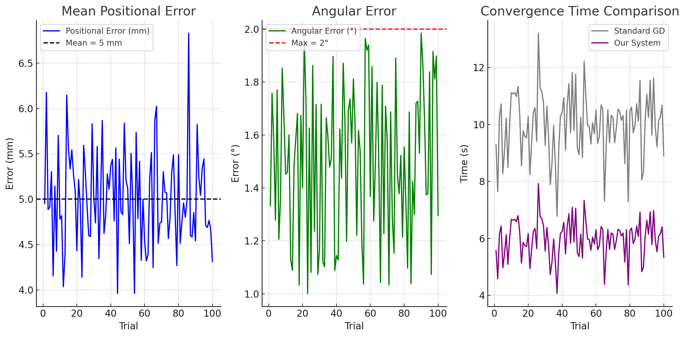

This project develops a robotic arm system for precise shoulder injections using a combination of computer vision (camera calibration, injection-point detection, ArUco markers) and optimization algorithms (ADAM, LM optimizer). It focuses on ensuring accuracy, safety, and automation in medical procedures. The goal is to assist healthcare professionals by improving the precision of intramuscular injections and minimizing human error. The system is built with affordability and accessibility in mind, utilizing open-source tools like OpenCV and low-cost hardware such as a 5-DOF robotic arm. This project also aims to explore the future integration of AI-based decision-making and haptic feedback for enhanced patient care.
The MedAssist Arm project is motivated by the growing demand for precision and consistency in medical procedures. Injections administered by humans can vary significantly depending on skill, experience, and conditions. This can lead to complications like incorrect dosage delivery, pain, or nerve injury. By incorporating robotics and computer vision, we aim to automate this procedure while maintaining high accuracy.
This system leverages real-time image processing to detect the human arm and identify a safe injection point. Using inverse kinematics and optimization algorithms, the robotic arm aligns and performs the injection movement. The proposed system is cost-effective, reliable, and adaptable, making it suitable for rural healthcare centers, vaccination camps, and training environments.
Our results show that the system can operate in real-world scenarios with limited tuning. It remains stable even under minor lighting variations and arm orientations. Future iterations can include patient-specific anatomical modeling for improved safety.
The demonstration includes a live injection simulation on a synthetic arm model. The webcam identifies the arm region and computes the injection point. The robotic arm then executes the movement autonomously, adjusting orientation and height using real-time feedback. The video demonstrates robustness and accuracy, even when minor occlusions or lighting changes occur.
The MedAssist Arm demonstrates reliable, automated injection capabilities and represents a significant step toward medical robotics in affordable healthcare. With successful detection, calibration, and precision control, the system validates our approach to reducing manual variability in injection procedures.
Future directions include: